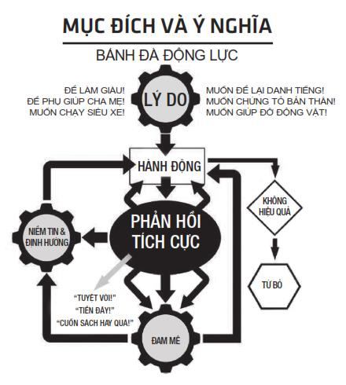

Chỉ có một phẩm chất cần thiết để thành công, đó là mục đích rõ ràng, hiểu rõ điều bạn muốn và khát khao hoàn thành nó.
- Napoleon Hill
Thành tựu vĩ đại cần quyết tâm sắt đá. Hành trình quyết tâm bền bỉ tạo dựng thành thói quen, từ đó tạo thành cách sống và dẫn đến thành quả.
Khi mọi người còn đang ngủ, người vũ công ba lê miệt mài tập luyện. Khi mọi người ăn pizza, vận động viên thể hình ăn salad. Khi mọi người tổ chức ăn nhậu, nhà phát minh giam mình trong phòng để nghiền ngẫm tìm giải pháp.
Vậy sự quyết tâm này đến từ đâu?
Nó không đến từ ý chí hay video truyền cảm hứng. Mà đến từ mục đích và ý nghĩa – lý do cốt lõi vì sao bạn hành động và tiếp tục hành động cho dù khó khăn, chỉ trích, thất bại và ngay cả khi khả năng chiến thắng là ít ỏi.
Đó là thái độ dứt khoát, kiên trì bám đuổi mục tiêu và không quan tâm đến những lời chê bai khi có kẻ nói video bạn làm trên YouTube là vớ vẩn. Nó khiến bạn lên tiếng cho dù đang run sợ. Đó là tiếp tục khởi nghiệp cho dù người thân trong gia đình nói bạn bị khùng – kết luận rút ra từ chín lần thất bại trước đó.
Mục đích và ý nghĩa là sức mạnh giúp bạn hành động tiến về phía trước trong khi những người khác đang mải mê ngủ.
Như đã đề cập trong mô hình khởi nghiệp UNSCRIPTED, mục đích và ý nghĩa là chất xúc tác để bạn hành động, bền chí và thành công. Trong khi thay đổi niềm tin, thiên kiến giúp bạn bắt đầu, mục đích và ý nghĩa giúp bạn kết thúc.

LÝ DO
Bạn không thể xem nhẹ sức mạnh của một khoảnh khắc. Tôi vẫn còn nhớ rõ như in. Khi đó, tôi đang nói chuyện với ba anh bạn. Chỉ còn vài ngày nữa là tốt nghiệp đại học và chúng tôi đang bàn về công việc sau khi ra trường. Khi tôi nói mình không đi xin việc vì tôi muốn làm doanh nhân (chú ý định hướng rõ ràng của tôi). Có anh bạn chê bai và ra vẻ coi thường. Anh này bắt đầu ba hoa về công việc kế toán có được từ các công ty hàng đầu và thao thao về mức lương sáu con số (đô-la) mà anh ta sẽ kiếm được trong vài năm sắp tới. Tôi nhủ thầm: “Được, có thể có ngày tôi sẽ thuê anh bạn này”.
Câu chuyện chỉ diễn ra vài phút nhưng không hiểu sao tôi không thể nào quên được. Tôi vẫn hay nhớ lại và suy nghĩ về nó. Dù không gặp lại các anh bạn này, nhưng lời dè bỉu ấy vẫn còn vang vọng – và đó một trong những lý do khiến tôi quyết tâm hơn.
Bên cạnh đó, đây là danh sách các lý do của tôi:
Dù lý do của bạn là gì, nó phải đủ mạnh để khiến bạn hành động dứt khoát. Nó có đủ lớn để bạn tiếp tục nỗ lực làm việc tối thứ Bảy trong khi bạn bè đang vui chơi? Nó có đủ mạnh để bạn tự tin lái chiếc xe đã cũ bên cạnh bạn bè ai cũng có xe mới? Nó có đủ giúp bạn tiếp tục dù khó khăn, trở ngại? Lý do không đủ mạnh mẽ sẽ không thể biến thành mục đích hay ý nghĩa. Nếu không có lý do đủ mạnh, mọi nỗ lực của bạn sẽ tan biến ngay khi gặp trở ngại đầu tiên.
Ví dụ, khó khăn phổ biến nhất đối với các doanh nhân mới khởi nghiệp là đối diện với khoảng thời gian chờ đợi từ ý tưởng cho đến khách hàng đầu tiên. Đó là thời điểm có thể kéo dài nhiều tháng, đôi khi là vài năm. Ví dụ, có anh bạn trẻ trên diễn đàn của tôi thiết kế kính mắt với thương hiệu riêng của mình. Từ ý tưởng đến đơn hàng đầu tiên mất hai năm. Nếu không nhìn thấy phản hồi tích cực, bạn sẽ dễ dàng từ bỏ. Rất dễ dàng. Cuộc sống dễ dàng gây chi phối: công việc, con cái, hay sức níu kéo từ các cơ hội khác.
Nếu không nhìn thấy kết quả, bạn dễ dàng buông bỏ: “Cái này không hiệu quả”, hoặc “Sẽ không có khách hàng”, hoặc “Có ý tưởng khác dễ hơn”.
Trong trường hợp này. Mục đích và ý nghĩa chính là cứu cánh cho bạn – chứ không phải là ý chí.
Mục đích và ý nghĩa còn giúp bạn khắc phục được những khó khăn khi bị người khác chê cười.
Nhiều năm trước, có một anh bạn trẻ viết bài trên diễn đàn của tôi, cậu ấy muốn là tỷ phú trước khi hai mươi lăm tuổi. Điều không may là mọi người trên diễn đàn chế giễu cậu. Tuy nhiên, sau nhiều năm, tôi để ý thấy: mặc dù bị chê bai, cậu vẫn tiếp tục nỗ lực và thử nhiều thứ để thực hiện những gì mình nói. Đột nhiên, tôi nhận ra cậu không giống như những “doanh nhân nửa vời” tìm cách chạy theo tiền. Khi tôi xem lại bài viết của cậu vài năm trước, tôi nhận ra cậu nói mục đích của cậu là để giúp mẹ mình thoát khỏi đói nghèo. Ngay tức khắc, niềm tin của tôi dành cho cậu thay đổi. Mặc dù thất bại nhiều lần, cuối cùng cậu đã thành công nhờ vào lý do mạnh mẽ đã trở thành mục đích và ý nghĩa của cuộc đời.
Như bạn đã thấy, trên diễn đàn của tôi, có những điều tôi thích và cũng có những điều rất ghét. Hơn tám năm trước, tôi thích nhìn thấy những doanh nhân nỗ lực dù thất bại để tạo ra sự khác biệt. Và điều tôi ghét là cho dù cố gắng đến mấy tôi vẫn luôn nhìn thấy những doanh nhân với cách nghĩ sai lầm – thành công mà không cần nhiều nỗ lực. Thế giới này đầy rẫy những người đi tìm kiếm điều dễ dàng, lối tắt đến thành công.
Điều không may là khởi nghiệp và cuộc sống tự do là câu chuyện chấp nhận hy sinh ở hiện tại để khỏi phải hối tiếc trong tương lai. Có nghĩa là, bạn có thực sự muốn? Bạn có sẵn sàng hy sinh tất cả cho khát vọng của mình?
Ai cũng muốn có người vợ hoàn hảo, nhưng ít ai rèn luyện để trở thành người chồng lý tưởng. Ai cũng muốn có sáu múi nhưng ít ai bền chí tập luyện hàng ngày. Ai cũng muốn giàu có nhưng ít ai muốn đối diện với rủi ro, làm việc nhiều giờ với thu nhập bấp bênh. Nếu không có lý do đủ lớn, bạn cũng không hơn gì người khác. Để thành công, bạn không thể hành động như người bình thường.
Sự thật là người lớn tuổi về hưu và chết sớm ngay sau đó là điều bình thường. Nếu không có công việc và thấy bản thân mình có ích, họ đánh mất ý nghĩa và mục đích. Nếu không có mục đích dứt khoát và định hướng rõ ràng, bạn sẽ thất bại. Khi chèo lái con thuyền cuộc đời mình, bạn cần phải có mục đích và ý nghĩa.
Đừng nhầm lẫn giữa lý do và ham muốn. Ham muốn thường chỉ tạm bợ, chóng vánh trong khi lý do thì ám ảnh bạn ngày này qua ngày khác.